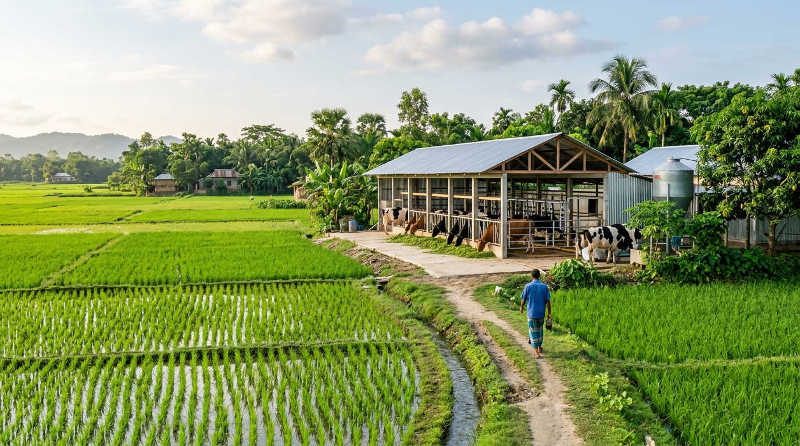

From livestock & poultry batches to pond aquaculture and field crops—track daily routines, financial ledgers, digital health records, and advisory updates effortlessly.

Sonali Feed Schedule • FCR 1.62
Income: ৳84,200 | Cost: ৳61,500
Select any agricultural vertical to explore how KhamarBD structures automated daily management and lot records.
Track bird flock lifecycles from Day 1 brooding to harvest. KhamarBD automatically schedules vaccine schedules (ND/IB, Gumboro), daily feed rations, mortality tracking, and Feed Conversion Ratio (FCR).
Manage individual cow and cattle profiles, daily morning/evening milk yield logs, deworming calendars, FMD/Anthrax vaccinations, and artificial insemination gestation timers.
Designed for Tilapia, Pangas, Rui, and Carp polyculture. Track fingerling stocking density, daily floating pellet dosage, dissolved oxygen/pH tests, and harvest growth curve.
Covering Paddy (Boro/Aman), Maize, Potato, and Vegetables. Follow field plot schedules from seedbed preparation, basal and top-dress fertilizer splits, pest scouting, to harvest.
Designed around real field challenges: accurate bookkeeping, routine adherence, disease control, and micro-climate advisories.
Scientific health routines for Broiler, Sonali, Dairy Cow, Tilapia, Rice & more with automated daily task schedules and cost prompts.
Track lot-level expenses (feed, chicks, medicine, labor) and revenues (milk, harvest, meat) with instant profitability metrics.
Scheduled vaccination logs, deworming calendars, weight sampling milestones, and digital specialist prescriptions.
Location-driven microclimate weather alerts and sector-specific management guidance without pseudo-science.
From initial onboarding to marketplace trading, achieve full operational visibility in 4 simple steps.
Create your sheds, ponds, or crop plots and launch active batches with one-click routines.
Get automated daily feed rations, vaccine alerts, and task prompts tailored to current batch age.
Log all expenses, revenues, mortality, and vet prescriptions with instant profit/loss visibility.
Sell harvests to verified buyers, purchase regional supplies, and consult certified vets at 0% fee.
Connecting verified farmers, certified agricultural input suppliers, and veterinary agronomists.
Feed, vaccines, equipment, and fingerlings from registered regional suppliers.
Tele-consultation with registered veterinarians & agronomists with printable digital prescriptions.
Direct buy-and-sell listings for fresh livestock, fish batches, dairy, and crop harvests.
Practical guides, seasonal management advisories, and industry updates.
Select your account type to register and begin managing your agricultural operations.
Manage batches, daily routines, unit financial ledgers, and digital health records.
List feeds, vaccines, medicines, and farm equipment; receive and dispatch regional orders.
Provide veterinary and agronomy consultations, live chat, and digital prescriptions.
Source live poultry, cattle, fresh fish, and agricultural crops directly from farm producers.